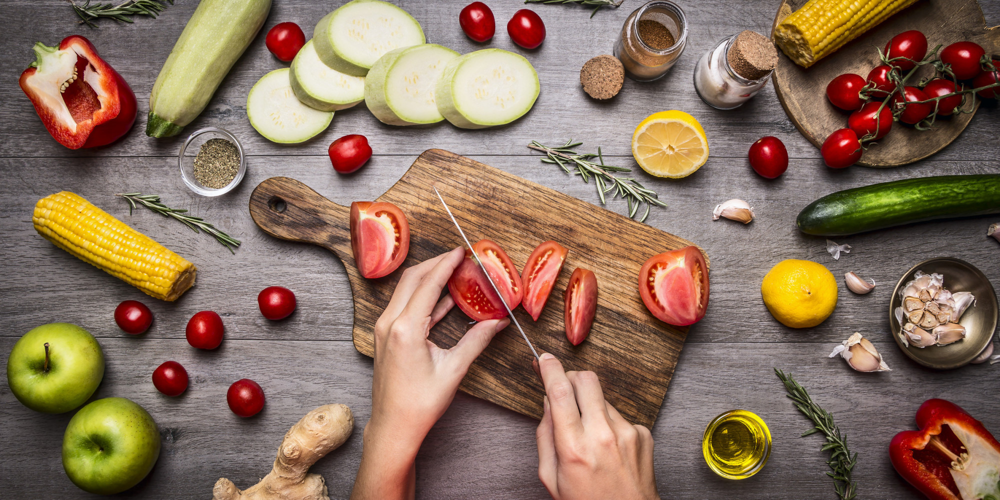

Recipe 1: Pizza
Pizza Dough Ingredients: Makes enough dough for two 10-12 inch pizzas
- 1/2 cups (355 ml) warm water (105°F-115°F)
- 1 package (2 1/4 teaspoons) of active dry yeast
- 3 3/4 cups (490 g) bread flour
- 2 tablespoons extra virgin olive oil
- 2 teaspoons salt
- 1 teaspoon sugar
Pizza Ingredients
- Extra virgin olive oil
- Cornmeal
- Tomato sauce
- Firm mozzarella cheese, grated
- Fresh soft mozzarella cheese, separated into small clumps
- Fontina cheese, grated
- Parmesan cheese, grated
- Feta cheese, crumbled
- Mushrooms, very thinly sliced if raw, otherwise first sautéed
- Bell peppers, stems and seeds removed, very thinly sliced
- Italian pepperoncini, thinly sliced
- Chopped fresh basil
- Baby arugula, tossed in a little olive oil
- Pesto
- Pepperoni, thinly sliced
- Onions, thinly sliced raw or caramelized
- Ham, thinly sliced
Making the dough:
- Proof the yeast: Place the warm water in the large bowl of a heavy
duty stand mixer. Sprinkle the yeast over the warm water and let it
sit for 5 minutes until the yeast is dissolved.
- Make and knead the pizza dough: Add the flour, salt, sugar, and olive oil, and using the mixing paddle attachment, mix on low speed for a minute. Then replace the mixing paddle with the dough hook attachment.
Knead the pizza dough on low to medium speed using the dough hook about 7-10 minutes.
If you don't have a mixer, you can mix the ingredients together and knead them by hand.
The dough should be a little sticky, or tacky to the touch. If it's too wet, sprinkle in a little more flour.
- Let the dough rise: Spread a thin layer of olive oil over the inside of a large bowl. Place the pizza dough in the bowl and turn it around so that it gets coated with the oil.
At this point you can choose how long you want the dough to ferment and rise. A slow fermentation (24 hours in the fridge) will result in more complex flavors in the dough. A quick fermentation (1 1/2 hours in a warm place) will allow the dough to rise sufficiently to work with.
Cover the dough with plastic wrap.
Making the pizza:
- Preheat pizza stone (or pizza pan or baking sheet): Place a pizza stone on a rack in the lower third of your oven. Preheat the oven to 475°F (245°C) for at least 30 minutes,
preferably an hour. If you don't have a pizza stone, you can use a pizza pan or a thick baking sheet; you need something that will not warp at high temperatures.
- 2 Divide the dough into two balls: Remove the plastic cover from the dough. Dust your hands with flour and push the dough down so it deflates a bit. Divide the dough in half.
Form two round balls of dough. Place each in its own bowl, cover with plastic and let sit for 15 minutes (or up to 2 hours).
-
Prep toppings: Prepare your desired toppings. Note that you are not going to want to load up each pizza with a lot of toppings as the crust will end up not crisp that way.
About a third a cup each of tomato sauce and cheese would be sufficient for one pizza. One to two mushrooms thinly sliced will cover a pizza.
- Flatten dough ball, and stretch out into a round: Working one ball of dough at a time, take one ball of dough and flatten it with your hands on a lightly floured work surface.
Starting at the center and working outwards, use your fingertips to press the dough to 1/2-inch thick. Turn and stretch the dough until it will not stretch further. Let the dough
relax 5 minutes and then continue to stretch it until it reaches the desired diameter - 10 to 12 inches.Use your palm to flatten the edge of the dough where it is thicker. Pinch the edges if you want to form a lip
- Brush dough top with olive oil: Use your fingertips to press down and make dents along the surface of the dough to prevent bubbling. Brush the top of the dough with olive oil (to prevent it from getting soggy from the toppings).
Let rest another 10-15 minutes. Repeat with the second ball of dough.
- Sprinkle pizza peel with corn meal, put flattened dough on top: Lightly sprinkle your pizza peel (or flat baking sheet) with cornmeal. (The corn meal will act as little ball bearings to help move the pizza from the pizza peel into the oven.)
Transfer one prepared flattened dough to the pizza peel.
- Sprinkle cornmeal on pizza stone, slide pizza onto pizza stone in oven: Sprinkle some cornmeal on the baking stone in the oven. Gently shake the peel to see if the dough will easily slide, if not, gently lift up the edges of the pizza and add a bit more cornmeal.
Slide the pizza off of the peel and onto the baking stone in the oven
- Bake pizza: Bake pizza in the 475°F (245°C) oven, one at a time, until the crust is browned and the cheese is golden, about 10-15 minutes. If you want, toward the end of the cooking time you can sprinkle on a little more cheese.
-
for the recipe: https://www.simplyrecipes.com/recipes/homemade_pizza/
Recipe 2: Garlic Parmesan Pasta
- 2 tablespoons unsalted butter
- 4 cloves garlic, minced
- 2 cups chicken broth
- 1 cup milk, or more, as needed
- 8 ounces uncooked fettuccine
- Kosher salt and freshly ground black pepper, to taste
- 1/4 cup freshly grated Parmesan cheese
- 2 tablespoons chopped fresh parsley leaves
Making the pasta: https://damndelicious.net/2014/10/11/one-pot-garlic-parmesan-pasta/
- Melt butter in a large skillet over medium high heat. Add garlic and cook, stirring frequently, until fragrant, about 1-2 minutes.
- Stir in chicken broth, milk and fettuccine; season with salt and pepper, to taste.
-
Bring to a boil; reduce heat and simmer, stirring occasionally, until pasta is cooked through, about 18-20 minutes. Stir in Parmesan. If the mixture is too thick, add more milk as needed until desired consistency is reached.
- Serve immediately, garnished with parsley, if desired.
Here are links to other recipes!